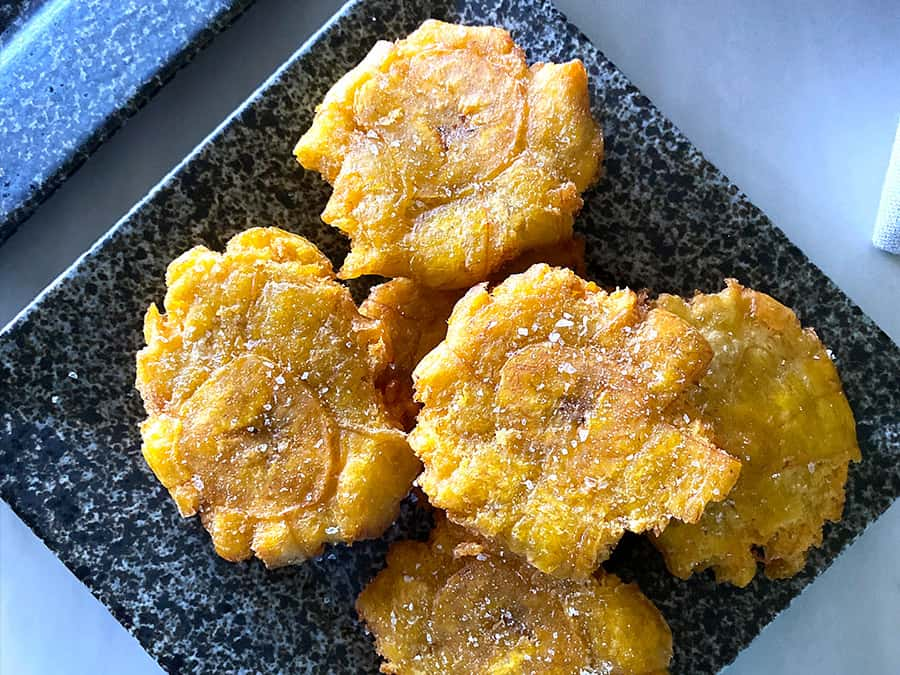

Tostones

Tostones are a popular side dish consisting of twice-fried green plantains sprinkled with salt.
Ingredients
- green plantains
- vegetable or canola oil
- salt
Steps
- Peel the plantains and cut them into rounds about 3/4ths of an inch thick.
- Fill a medium sauce pan with enough oil to cover the plantain rounds and raise it to medium-high heat.
- Place the plantain rounds into the hot oil, frying them for about 4 minutes or lightly golden. Then remove them from the oil with a slotted spoon and let them rest for a few minutes on a paper-towel lined plate.
- Smash the plantain rounds evenly until they are about 1/4th of an inch thick using a tostonera or the bottom of a small plate.
- Once flattened, return the plantains to the hot oil for a second round of frying. Remove them from the oil with a slotted spoon after 4 minutes or once they have reached a golden color and place them again on a paper-towel lined plate.
- Salt generously and serve immediately.